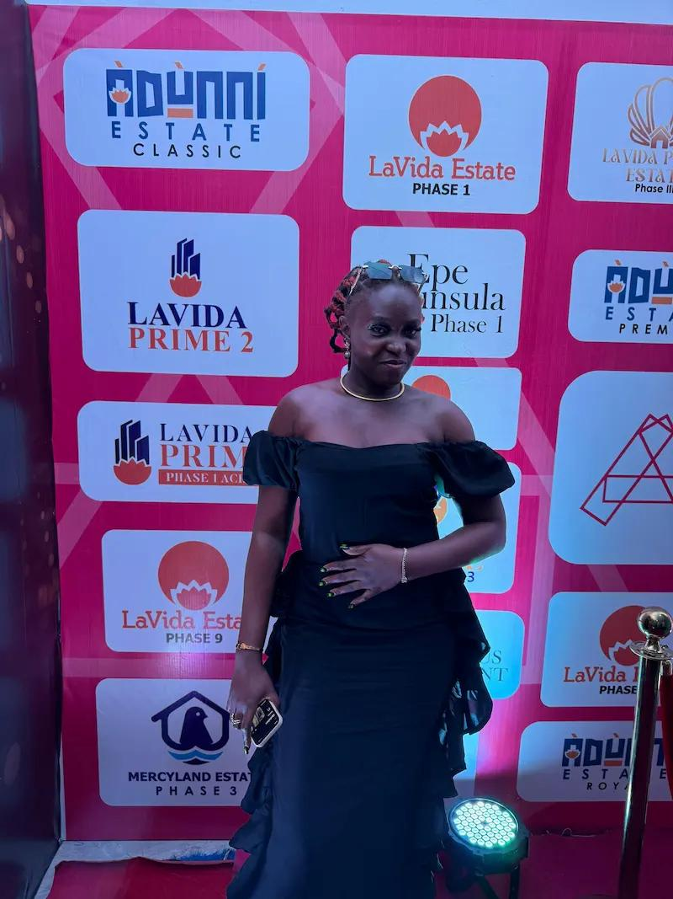

Goke-Aina Yewande Tosin | WDD 130
Hello, My name is Goke-Aina Yewande Tosin, i am partly Ghanain and Nigerian, I would love to use my knowlwdge to help the world and us humans one day. I love science and technology because of its signinficant and I have a lot i want to acheive with my degree after this certificate. Thank you.